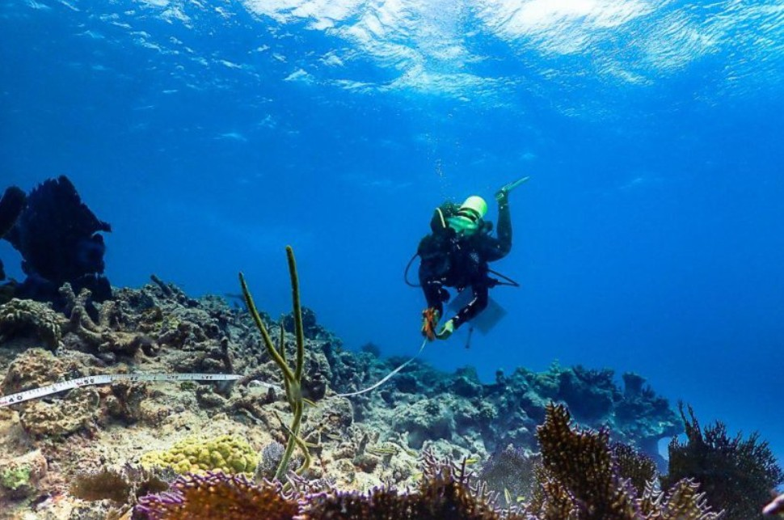
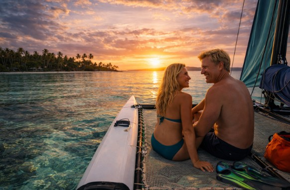
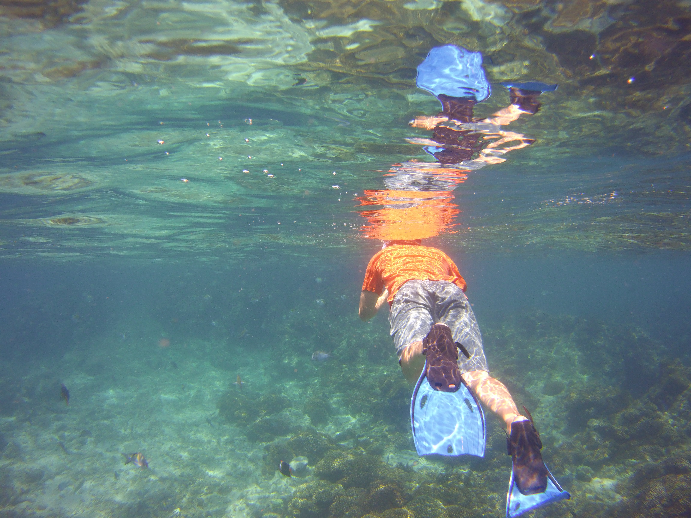
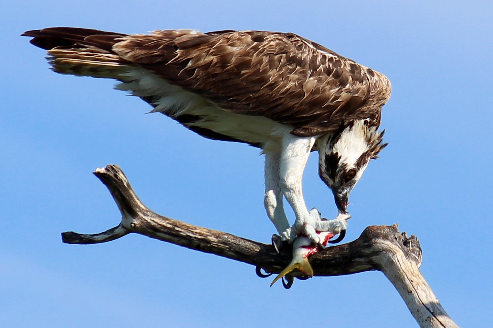
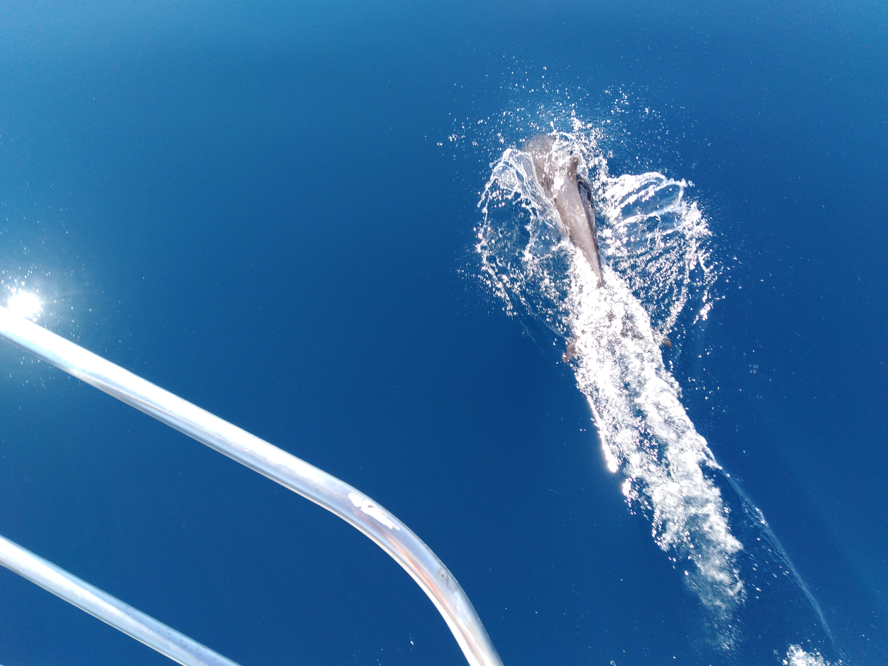
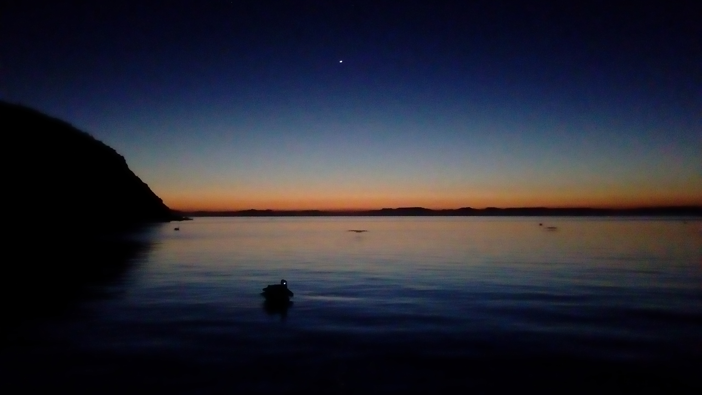
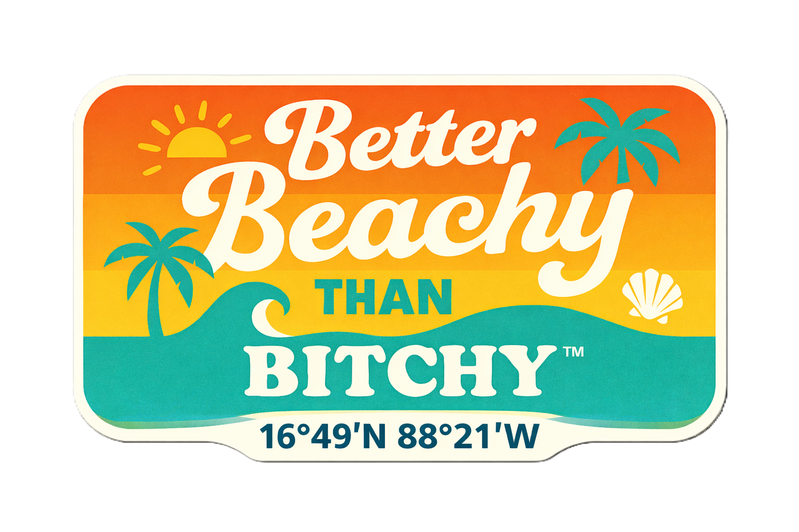

The Nevado Raider Call

Winter in the Florida Keys. Summer up the Atlantic coast. Then across the Gulf Stream to the Bahamas — and from there, Bahamas winters and Florida summers, reef to reef, for as long as the water keeps calling.



The Nevado Raider Call
Blue Rim 5™ departs Mobile, Alabama in October–November 2027. The opening run heads east along the Gulf coast and south to the Florida Keys for the first winter. Summer 2028 runs up the Atlantic coast to North Carolina. In late October 2028, Shamrocket crosses from Fort Lauderdale to the Bahamas for her first Bahamas winter.
From then on, the expedition settles into its rhythm: winters in the Bahamas, summers on the Florida and Atlantic side. Every season is spent in the water — snorkeling, diving, logging every reef, anchorage, and uninhabited beach along the way.
Blue Rim 5™ runs on weather, not calendar. Weather windows decide when we move. The quality of a place decides how long we stay. Nights are spent at anchor, on a mooring, or pulled up on a beach — never in a marina unless there is truly no alternative.
The first year gets Shamrocket from the Gulf to the Bahamas the long way — through the Keys and up the Atlantic coast first. After the crossing, the seasons take over.
| Phase | Where | When |
|---|---|---|
| 🇺🇸 Departure | Mobile · Pensacola · Destin · Panama City · Apalachicola · Cedar Key · Tampa Bay → south to the Keys | Oct–Nov 2027 |
| 🇺🇸 First Winter | The Florida Keys · Key West · Dry Tortugas | Winter 2027–28 |
| 🇺🇸 First Summer | Dry Tortugas · Key West · Florida Atlantic coast · Georgia · the Carolinas · Cape Lookout, NC | Summer 2028 |
| 🇧🇸 The Crossing | Fort Lauderdale → the Bahamas | Late Oct 2028 |
| 🇧🇸 First Bahamas Winter | Great Exuma base · the Bahamas chain | Winter 2028–29 |
| 🇧🇸🇺🇸 From Then On | Bahamas winters · Florida & Atlantic summers | Every year |
Welcome to the Reef

Starting in the winter of 2028–29, every winter is spent in the Bahamas — at least six months a season, based around Great Exuma, the warmest water in the chain. From there, Shamrocket works the islands: reefs, seagrass beds, mangrove creeks, blue holes, and the uninhabited cays that bigger boats can't reach.
The focus is pure snorkeling and diving. The only reasons to come ashore are fresh water and groceries. Every dive site, snorkel site, anchorage, and uninhabited cay gets logged with its position — and the known hurricane holes get checked and recorded for other mariners.
The Bahamas winters are also research seasons. Shamrocket and her instruments go to work alongside marine research teams — reef, seagrass, mangrove, marine life, and blue-hole observation — through the GROAN platform.
🇧🇸 The Bahamas • Winter


Field Research • GROAN


Summers run from the Dry Tortugas through Key West and the Keys, up the Florida Atlantic coast, past Georgia and the Carolinas, and on to North Carolina — Cape Lookout and the wrecks of the Graveyard of the Atlantic.
Every dive spot, snorkel spot, anchorage, and uninhabited beach pull-up along that stretch gets logged. Summers also mean shipwreck history research, hurricane-hole verification, work with research teams, live broadcasts from the water, and songwriting at the waterfront venues along the way.
🇺🇸 Keys & Atlantic • Summer



Hobie Getaway catamaran. 17 feet. 24-inch draft. Open trampolines. She gets into places bigger boats can't go — inside the reef, into the mangrove creek, onto the beach where the people are. Wind and a solar-powered electric motor move her. No fuel, no propane, nothing combustible aboard.
Jackery Solar Generator 2000 v2 with solar. Starlink Mini. J Sink Air Line hookah dive system and a full SCUBA setup. Water-quality meter and Secchi disk for the research work. DRAGR Magnum Jet Sled for gear. Over 1,250 miles already sailed in the catamaran-and-sled configuration.
See the Full Build →
Shamrocket — Hobie Getaway Catamaran · 24" Draft
The adventure is real. The evenings are extraordinary. When the anchor is set and the day is done, the Rim Runner™ gets made. This is not the reward for the expedition. It is the other half of it.
Get the Full Recipe & Story →The Rim Runner™ anthem — stadium island-rock, sunset-protocol energy, made for the moment the anchor goes down.

